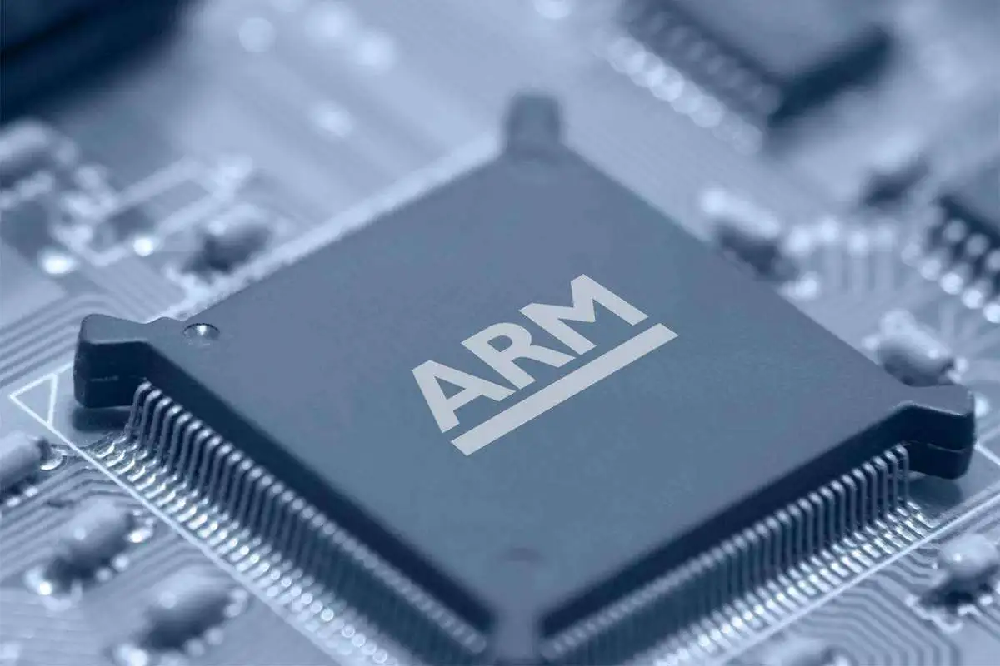
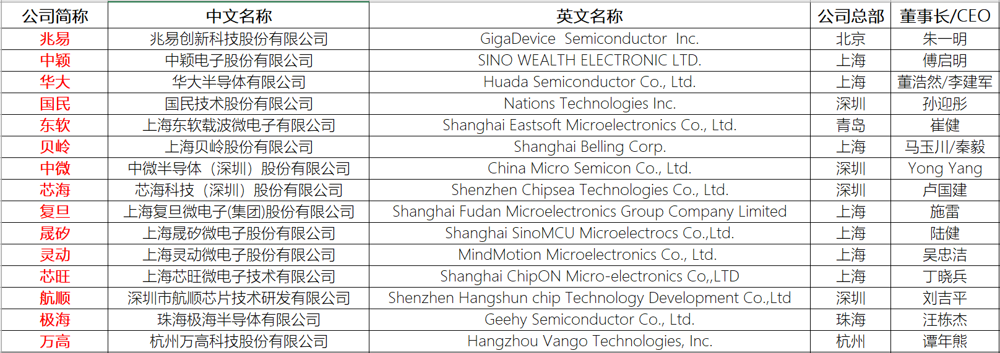
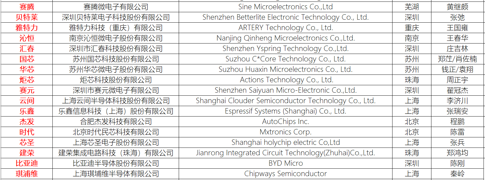
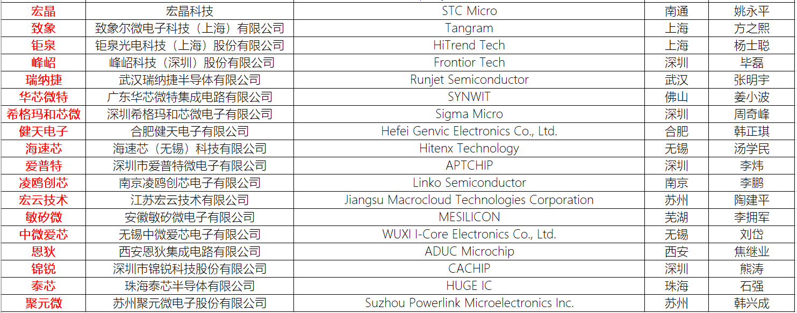
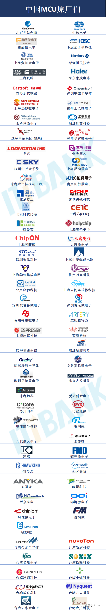

<!DOCTYPE lake>
<h1 data-lake-id="B0HZ0" id="B0HZ0"></h1><h1 data-lake-id="AC6KR" id="AC6KR"><span data-lake-id="u520ac261" id="u520ac261">ARM架构</span></h1><p data-lake-id="ub0ace241" id="ub0ace241" style="text-indent: 2em"><span class="lake-fontsize-12" data-lake-id="ua0e66003" id="ua0e66003">ARM是一种芯片架构，由英国的ARM Holdings公司开发和授权，被广泛应用于各种嵌入式系统、移动设备和消费电子产品中。ARM架构被设计成低功耗、高性能、可定制化的特点，能够满足各种应用场景下的需求。</span></p><p data-lake-id="u94c1f40c" id="u94c1f40c"><span class="lake-fontsize-12" data-lake-id="u605334b3" id="u605334b3">ARM架构主要设计了以下几个部分内容：</span></p><ol list="u93ec1f47"><li data-lake-id="ufbec72db" fid="ua815bd12" id="ufbec72db"><span class="lake-fontsize-12" data-lake-id="u12243350" id="u12243350">指令集架构（Instruction Set Architecture）：ARM架构是基于精简指令集计算机（RISC）架构设计的，其指令集具有高效的指令执行速度、较小的代码大小和低功耗等特点。ARM架构提供了多个指令集版本，包括32位和64位，不同版本的指令集支持不同的特性和功能，以适应不同的应用场景。</span></li><li data-lake-id="u755953ca" fid="ua815bd12" id="u755953ca"><span class="lake-fontsize-12" data-lake-id="u16cc30d4" id="u16cc30d4">存储器架构（Memory Architecture）：ARM架构的存储器架构包括内存、闪存、EEPROM等类型，它们提供了不同的存储特性和使用场景。ARM架构还支持虚拟内存技术，通过虚拟地址和物理地址映射实现了对于内存的更高效的利用，提高了系统的运行效率和稳定性。</span></li><li data-lake-id="uf3488fef" fid="ua815bd12" id="uf3488fef"><span class="lake-fontsize-12" data-lake-id="u299f2c10" id="u299f2c10">总线架构（Bus Architecture）：ARM架构的总线架构包括数据总线、地址总线和控制总线等，它们提供了连接CPU、存储器、外设等各个部件之间的通信和数据传输。ARM架构的总线架构是高度灵活和可扩展的，可以适应不同的应用场景和系统需求。</span></li><li data-lake-id="ufec73087" fid="ua815bd12" id="ufec73087"><span class="lake-fontsize-12" data-lake-id="u10f27019" id="u10f27019">处理器架构（Processor Architecture）：ARM架构的处理器架构包括中央处理器（CPU）、图形处理器（GPU）、数字信号处理器（DSP）等。ARM架构的处理器架构具有高性能、低功耗、低成本等特点，可以适应不同的应用场景和设备类型。</span></li><li data-lake-id="u4153844e" fid="ua815bd12" id="u4153844e"><span class="lake-fontsize-12" data-lake-id="u1b5ea522" id="u1b5ea522">安全架构（Security Architecture）：ARM架构的安全架构提供了各种安全功能和特性，包括硬件加密、安全存储、安全启动等。ARM架构的安全架构可以保护系统的安全性和稳定性，防止恶意攻击和数据泄露等安全问题。</span></li></ol><h1 data-lake-id="gFaf4" id="gFaf4"><span data-lake-id="ua6e4acfd" id="ua6e4acfd">ARM架构的历史</span></h1><p data-lake-id="u316149ef" id="u316149ef" style="text-indent: 2em"><span data-lake-id="u69585a7c" id="u69585a7c">ARM架构最早由英国的Acorn Computer公司于1983年开发，当时主要用于Acorn的电脑产品中。</span></p><p data-lake-id="u66f5e8ce" id="u66f5e8ce" style="text-indent: 2em"><span data-lake-id="u7355d8f7" id="u7355d8f7">1990年，ARM公司独立成立，并开始授权ARM架构的设计和开发。此后，ARM架构逐渐发展成为一种广泛应用于嵌入式系统和移动设备的芯片架构。</span></p><p data-lake-id="u362061a9" id="u362061a9" style="text-indent: 2em"><span data-lake-id="ue0bab272" id="ue0bab272">随着时间的推移，ARM架构也不断地升级和改进，推出了一系列新的版本和系列，包括ARMv3、ARMv4、ARMv5、ARMv6、ARMv7和ARMv8等版本。每个版本都增加了新的特性和功能，提高了ARM架构的性能、功耗和可定制化能力。</span></p><p data-lake-id="u5d0391f0" id="u5d0391f0" style="text-indent: 2em"><span data-lake-id="uf3fbe428" id="uf3fbe428">ARM架构的升级和改进也受到了市场需求和技术发展的影响。例如，在移动设备领域，需要更高效的处理器性能和更低的功耗，ARM架构就相应地增加了对大核心、小核心、动态电压调节等技术的支持，提高了性能和功耗的平衡。同时，在工业自动化和物联网等领域，ARM架构也不断地适应新的需求和技术发展，推出了更加灵活和可定制化的处理器系列和解决方案。</span></p><h1 data-lake-id="hxCQa" id="hxCQa"><span data-lake-id="u80be9232" id="u80be9232" style="color: rgb(55, 65, 81); background-color: rgb(247, 247, 248)">ARM架构的应用</span></h1><p data-lake-id="uacad80d4" id="uacad80d4"><span class="lake-fontsize-12" data-lake-id="ubbe0319c" id="ubbe0319c">ARM架构广泛应用于各种嵌入式系统、移动设备和消费电子产品中，主要包括以下几个方面：</span></p><p data-lake-id="u647dcbf9" id="u647dcbf9"><span class="lake-fontsize-12" data-lake-id="u67148516" id="u67148516">（1）嵌入式系统：ARM架构被广泛应用于各种嵌入式系统中，如智能家居、工业自动化、车载系统、医疗设备等。由于其低功耗、高性能和可定制化的特点，ARM架构能够满足不同嵌入式系统的需求。</span></p><p data-lake-id="u74b636cb" id="u74b636cb"><span class="lake-fontsize-12" data-lake-id="u5f90f132" id="u5f90f132">（2）移动设备：ARM架构被广泛应用于移动设备领域，如手机、平板电脑、手持终端等。ARM架构的低功耗和高性能特点，使得移动设备能够实现更长的续航时间和更好的用户体验。</span></p><p data-lake-id="ubccc906a" id="ubccc906a"><span class="lake-fontsize-12" data-lake-id="u613d61d9" id="u613d61d9">（3）消费电子产品：ARM架构被广泛应用于消费电子产品中，如智能电视、智能音箱、智能手表等。ARM架构的可定制化特点，使得芯片设计者能够快速开发符合市场需求的产品。</span></p><p data-lake-id="ubd0dde9c" id="ubd0dde9c"><span class="lake-fontsize-12" data-lake-id="u80104ff6" id="u80104ff6">（4）工业控制：ARM架构在工业控制领域也有广泛的应用，如工业机器人、自动化生产线等。ARM架构的低功耗和高性能特点，能够满足工业控制对于实时性和可靠性的要求。</span></p><p data-lake-id="u20aa9cdd" id="u20aa9cdd"><span class="lake-fontsize-12" data-lake-id="u2e45213b" id="u2e45213b">（5）物联网：ARM架构在物联网领域也有广泛的应用，如智能家居、智能城市、智能交通等。ARM架构的低功耗和可定制化特点，能够为物联网设备提供更好的连接性和控制性能。</span></p><h1 data-lake-id="Hrgp6" id="Hrgp6"><span data-lake-id="ubcc400b8" id="ubcc400b8">ARM内核系列</span></h1><p data-lake-id="u786cba2e" id="u786cba2e"><span class="lake-fontsize-12" data-lake-id="ubc1fbb4f" id="ubc1fbb4f">ARM公司设计的处理器内核有很多种，根据不同的应用场景和性能需求，可以选择不同的内核进行设计。以下是一些常见的ARM内核：</span></p><ol list="uf91b9d37"><li data-lake-id="u72e656fd" fid="u571ca9c6" id="u72e656fd"><span class="lake-fontsize-12" data-lake-id="uaddd37e2" id="uaddd37e2">Cortex-A系列：面向高性能应用领域的内核，主要用于移动设备、智能终端、高端嵌入式系统等领域。Cortex-A系列内核具有高性能、高可扩展性、丰富的外设接口和低功耗等优点。</span></li><li data-lake-id="u67936336" fid="u571ca9c6" id="u67936336"><span class="lake-fontsize-12" data-lake-id="u3241446f" id="u3241446f">Cortex-R系列：面向实时应用领域的内核，主要用于工业控制、汽车电子、航空航天等领域。Cortex-R系列内核具有高可靠性、低延迟、强实时性和硬件保护等特点。</span></li><li data-lake-id="uaeba9ecc" fid="u571ca9c6" id="uaeba9ecc"><span class="lake-fontsize-12" data-lake-id="u10bb9f01" id="u10bb9f01">Cortex-M系列：面向低功耗嵌入式系统的内核，主要用于智能传感器、便携式设备、家用电器等领域。Cortex-M系列内核具有低功耗、低成本、高效能、易于开发等特点。</span></li><li data-lake-id="u830769a1" fid="u571ca9c6" id="u830769a1"><span class="lake-fontsize-12" data-lake-id="u8e62934c" id="u8e62934c">ARM7系列：面向嵌入式系统领域的内核，主要用于控制器、存储设备、安全芯片等领域。ARM7系列内核具有低成本、低功耗、高集成度、易于开发等特点。</span></li><li data-lake-id="uaa802af3" fid="u571ca9c6" id="uaa802af3"><span class="lake-fontsize-12" data-lake-id="ue03a8463" id="ue03a8463">ARM9系列：面向嵌入式系统领域的内核，主要用于数字音视频、通信、网络设备等领域。ARM9系列内核具有高性能、多媒体处理能力、丰富的外设接口和易于扩展等特点。</span></li></ol><h1 data-lake-id="xAlle" id="xAlle"><span data-lake-id="u5c08232b" id="u5c08232b">Cortex-M系列</span></h1><p data-lake-id="u82ff802c" id="u82ff802c"><span class="lake-fontsize-12" data-lake-id="ue1c71ad5" id="ue1c71ad5">Cortex-M系列是ARM公司推出的一种面向低功耗嵌入式系统的处理器内核，主要用于智能传感器、便携式设备、家用电器等领域。Cortex-M系列内核具有低功耗、低成本、高效能、易于开发等特点，是目前嵌入式系统领域最受欢迎的处理器内核之一。根据不同的性能和功耗需求，Cortex-M系列内核又分为以下几类：</span></p><ol list="ua95f08a3"><li data-lake-id="ua0f4f31b" fid="uf1a76c05" id="ua0f4f31b"><strong><span class="lake-fontsize-12" data-lake-id="u20b8278c" id="u20b8278c">Cortex-M0系列</span></strong><span class="lake-fontsize-12" data-lake-id="u1c08dd6d" id="u1c08dd6d">🌟</span><span class="lake-fontsize-12" data-lake-id="uc60aead0" id="uc60aead0">：面向低功耗、成本敏感型应用，适用于智能传感器、安全芯片、家用电器等领域。Cortex-M0系列内核的主频通常在10MHz-50MHz之间，具有低功耗、低成本、易于开发等特点。</span></li><li data-lake-id="u2593f386" fid="uf1a76c05" id="u2593f386"><span class="lake-fontsize-12" data-lake-id="ue025e030" id="ue025e030">Cortex-M3系列：面向高性能、实时应用，适用于工业控制、汽车电子、医疗设备等领域。Cortex-M3系列内核的主频通常在50MHz-120MHz之间，具有高性能、强实时性和硬件保护等特点。</span></li><li data-lake-id="u12367994" fid="uf1a76c05" id="u12367994"><strong><span class="lake-fontsize-12" data-lake-id="u22332226" id="u22332226">Cortex-M4</span></strong><span class="lake-fontsize-12" data-lake-id="ua2d67649" id="ua2d67649">系列</span><span class="lake-fontsize-12" data-lake-id="u8be892bd" id="u8be892bd">🌟</span><span class="lake-fontsize-12" data-lake-id="uecd81627" id="uecd81627">：基于Cortex-M3系列内核，增加了DSP和浮点运算单元，适用于音视频处理、图像处理、控制算法等领域。Cortex-M4系列内核的主频通常在80MHz-240MHz之间，具有高性能、DSP(Digital Signal Processing)和浮点运算能力等特点。</span></li><li data-lake-id="u51ed99d7" fid="uf1a76c05" id="u51ed99d7"><span class="lake-fontsize-12" data-lake-id="u45e8414c" id="u45e8414c">Cortex-M7系列：基于Cortex-M4系列内核，增加了双精度浮点运算单元和指令预取器等特性，适用于音视频编解码、高速通信等领域。Cortex-M7系列内核的主频通常在200MHz-400MHz之间，具有高性能、低延迟和高精度的浮点运算能力等特点。</span></li></ol><p data-lake-id="u68ad45d6" id="u68ad45d6"><span class="lake-fontsize-12" data-lake-id="u64f3fafd" id="u64f3fafd" style="color: rgb(55, 65, 81); background-color: rgb(247, 247, 248)">​</span><br/></p><h1 data-lake-id="gp7as" id="gp7as"><span data-lake-id="u8f989e38" id="u8f989e38">常用ARM芯片厂商</span></h1><h2 data-lake-id="fak1r" id="fak1r"><span data-lake-id="uf0bae5eb" id="uf0bae5eb">国外</span></h2><p data-lake-id="u10c6e4c2" id="u10c6e4c2"><span class="lake-fontsize-12" data-lake-id="u9588bf7d" id="u9588bf7d">ST意法半导体 STM32 </span><a data-lake-id="u15b0d1c4" href="https://www.st.com/" id="u15b0d1c4" rel="noopener noreferrer" target="_blank"><span class="lake-fontsize-12" data-lake-id="u746317ba" id="u746317ba">https://www.st.com/</span></a></p><p data-lake-id="u0b09f1fc" id="u0b09f1fc"><span class="lake-fontsize-12" data-lake-id="u0f624636" id="u0f624636">NXP恩智浦 LPC系列，K系列，KL系列，i.MX系列  </span><a data-lake-id="ubb535ec8" href="https://www.nxp.com/" id="ubb535ec8" rel="noopener noreferrer" target="_blank"><span class="lake-fontsize-12" data-lake-id="udda77326" id="udda77326">https://www.nxp.com/</span></a></p><p data-lake-id="u9811b41a" id="u9811b41a"><span class="lake-fontsize-12" data-lake-id="u422f9ffc" id="u422f9ffc">Renesas瑞萨电子 RA系列  </span><a data-lake-id="u36f2639e" href="https://www.renesas.cn/cn/zh" id="u36f2639e" rel="noopener noreferrer" target="_blank"><span class="lake-fontsize-12" data-lake-id="uae1a4cc0" id="uae1a4cc0">https://www.renesas.cn/cn/zh</span></a></p><p data-lake-id="ud6fb8b43" id="ud6fb8b43"><span class="lake-fontsize-12" data-lake-id="u801c4cf9" id="u801c4cf9">TI 德州仪器AM系列 </span><a data-lake-id="u69cad6c2" href="https://www.ti.com/" id="u69cad6c2" rel="noopener noreferrer" target="_blank"><span class="lake-fontsize-12" data-lake-id="ud6272199" id="ud6272199">https://www.ti.com/</span></a></p><h2 data-lake-id="VuBep" id="VuBep"><span data-lake-id="u3e91c2b1" id="u3e91c2b1" style="color: rgb(51, 51, 51)">国内</span></h2><p data-lake-id="uc850ed37" id="uc850ed37"><strong><span data-lake-id="u4611ae28" id="u4611ae28" style="color: rgb(51, 51, 51)">GigaDevice兆易创新 GD32系列</span></strong><span data-lake-id="ue92d6b45" id="ue92d6b45"> </span><a data-lake-id="u7e747784" href="https://www.gigadevice.com.cn/" id="u7e747784" rel="noopener noreferrer" target="_blank"><span data-lake-id="u8fd87041" id="u8fd87041">https://www.gigadevice.com.cn/</span></a></p><p data-lake-id="u15d4fae1" id="u15d4fae1"><strong><span data-lake-id="u0ecbe671" id="u0ecbe671" style="color: rgb(51, 51, 51)">NATION国民技术 N32系列 </span></strong><a data-lake-id="u37e5db25" href="https://www.nationstech.com/" id="u37e5db25" rel="noopener noreferrer" target="_blank"><span data-lake-id="u1409e119" id="u1409e119">https://www.nationstech.com/</span></a></p><p data-lake-id="u803e196a" id="u803e196a"><span data-lake-id="ua1e4dbdc" id="ua1e4dbdc">武汉芯源 CW32 </span><a data-lake-id="u0a697b22" href="https://www.whxy.com/" id="u0a697b22" rel="noopener noreferrer" target="_blank"><span data-lake-id="u3c7b605a" id="u3c7b605a">https://www.whxy.com/</span></a></p><p data-lake-id="u0b823644" id="u0b823644"><span data-lake-id="ufd6dcbbf" id="ufd6dcbbf">深圳航顺 HK32	</span><a data-lake-id="uae87ef41" href="https://www.hsxp-hk.com/" id="uae87ef41" rel="noopener noreferrer" target="_blank"><span data-lake-id="u3a38fc31" id="u3a38fc31">https://www.hsxp-hk.com/</span></a></p><p data-lake-id="u60764dfc" id="u60764dfc"><span data-lake-id="ufcb68cce" id="ufcb68cce">华大半导体 HC32  </span><a data-lake-id="ub132e86d" href="https://www.hdsc.com.cn/" id="ub132e86d" rel="noopener noreferrer" target="_blank"><span data-lake-id="u4aa15102" id="u4aa15102">https://www.hdsc.com.cn/</span></a></p><p data-lake-id="u2e425834" id="u2e425834"><span data-lake-id="u40dc1eba" id="u40dc1eba">Rockchip瑞芯微 RK系列（rk3568）</span><a data-lake-id="ue3e3dc23" href="http://www.rock-chips.com/" id="ue3e3dc23" rel="noopener noreferrer" target="_blank"><span data-lake-id="u6c65ae45" id="u6c65ae45">http://www.rock-chips.com/</span></a></p><p data-lake-id="u5bfa0394" id="u5bfa0394"><span data-lake-id="uf6c1272a" id="uf6c1272a">Allwinner全志科技   R系列，V系列，A系列 </span><a data-lake-id="ue1cbd798" href="https://www.allwinnertech.com/" id="ue1cbd798" rel="noopener noreferrer" target="_blank"><span data-lake-id="u7bd796c4" id="u7bd796c4">https://www.allwinnertech.com/</span></a></p><p data-lake-id="u34d2b184" id="u34d2b184"><span data-lake-id="uc5eccdab" id="uc5eccdab" style="color: rgb(51, 51, 51)">高通Qualcomm</span></p><p data-lake-id="ufe365f60" id="ufe365f60"><span data-lake-id="u6b003316" id="u6b003316" style="color: rgb(51, 51, 51)">联发科MTK </span></p><p data-lake-id="udea93c29" id="udea93c29"><br/></p><h1 data-lake-id="M3EeD" id="M3EeD"><span data-lake-id="ua22214e8" id="ua22214e8">MCU六大领域国产TOP厂商</span></h1><p data-lake-id="u7da2d7f2" id="u7da2d7f2"><span data-lake-id="u257bbe79" id="u257bbe79" style="color: rgb(18, 18, 18)">● 家电和消费电子：炬芯、建荣、中微、中颖、雅特力、芯圣、汇春、灵动、晟矽</span></p><p data-lake-id="u9c45f956" id="u9c45f956"><span data-lake-id="ufa698020" id="ufa698020" style="color: rgb(18, 18, 18)">● 物联网：芯海、</span><strong><span data-lake-id="u1f31f731" id="u1f31f731" style="color: rgb(18, 18, 18)">乐鑫</span></strong><span data-lake-id="ucd8e0c44" id="ucd8e0c44" style="color: rgb(18, 18, 18)">、贝特莱、</span><strong><span data-lake-id="u210a4b8c" id="u210a4b8c" style="color: rgb(18, 18, 18)">兆易</span></strong><span data-lake-id="u732b9397" id="u732b9397" style="color: rgb(18, 18, 18)">、云间、健天、炬芯</span></p><p data-lake-id="uc42413b1" id="uc42413b1"><span data-lake-id="uef33b8d7" id="uef33b8d7" style="color: rgb(18, 18, 18)">● 智能表计、IC卡及安全：</span><strong><span data-lake-id="u2c9116df" id="u2c9116df" style="color: rgb(18, 18, 18)">国民</span></strong><span data-lake-id="u914689e2" id="u914689e2" style="color: rgb(18, 18, 18)">、复旦、贝岭、钜泉</span></p><p data-lake-id="u09439b9a" id="u09439b9a"><span data-lake-id="u322dffac" id="u322dffac" style="color: rgb(18, 18, 18)">● 计算机和网络通信：国芯、极海、东软、</span><strong><span data-lake-id="u8638e918" id="u8638e918" style="color: rgb(18, 18, 18)">沁恒</span></strong><span data-lake-id="ucba02271" id="ucba02271" style="color: rgb(18, 18, 18)">、华芯、希格玛</span></p><p data-lake-id="u1cbfe59c" id="u1cbfe59c"><span data-lake-id="u660d9c8d" id="u660d9c8d" style="color: rgb(18, 18, 18)">● 工业控制：</span><strong><span data-lake-id="u3aecded9" id="u3aecded9" style="color: rgb(18, 18, 18)">华大</span></strong><span data-lake-id="ucb98b6f0" id="ucb98b6f0" style="color: rgb(18, 18, 18)">、万高、时代、航顺、赛元、峰岹、极海</span></p><p data-lake-id="uccec6406" id="uccec6406"><span data-lake-id="udcec5fe6" id="udcec5fe6" style="color: rgb(18, 18, 18)">● 汽车电子：赛腾、杰发、芯旺、比亚迪半导体、琪浦维半导体</span></p><p data-lake-id="ua3a15261" id="ua3a15261"><span data-lake-id="u0ba18347" id="u0ba18347" style="color: rgb(18, 18, 18)">​</span><br/></p><p data-lake-id="u35f46529" id="u35f46529"><strong><span data-lake-id="u4bf57242" id="u4bf57242" style="color: rgb(18, 18, 18)">50家国内MCU厂商基本信息及统计分布</span></strong></p><p data-lake-id="uf30d8826" id="uf30d8826"></p><p data-lake-id="u3a7cef98" id="u3a7cef98"></p><p data-lake-id="ub1a1d44b" id="ub1a1d44b"></p><p data-lake-id="u077c0b71" id="u077c0b71"><br/></p><p data-lake-id="u56531c19" id="u56531c19"></p>